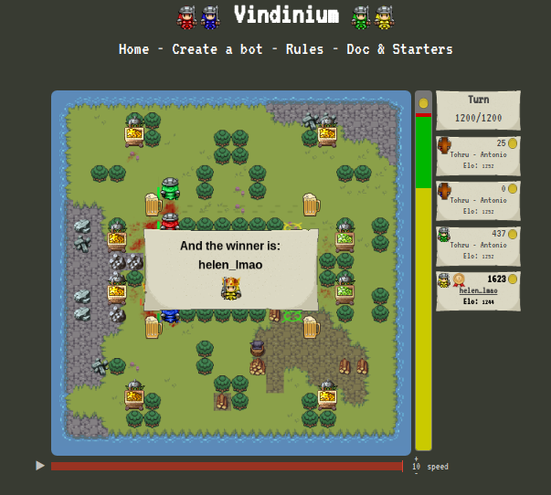

Vindinium is a dungeon-style role-playing game.

The primary objective is to collect gold, represented by the yellow coins on the right.
The person who collects the most gold by the end of the game wins.

Each bot has a life points cap of 100. Moving and fighting reduces life.
Life can be restored at the taverns (corners), where players use their gold to buy restorative cream sodas.
Gold can be collected by fighting goblins at mines, taking ownership of the mines in the process.
Mines give you gold each turn. When two bots meet at the same location, a battle ensues. The first person to reach 0 health is the loser.
All of their mines are lost to the winner; however, they retain all their gold while respawning at their starting position.
Trees are obstacles in the game, and can cause bots to get stuck if their code does not account for a solution.
Players, mines, taverns, and obstacles are present in each game.
Maps are always symmetrical, but object locations, spawn positions, map sizes, and the number of mines available can vary immensely.

One game may have a tiny map with only 4 mines available. This leads to bots constantly under the threat of attack,
quick losses of life, and constant mine turnover. The small number of mines in combination with small maps lead to games
that are often very close- there may only be a small difference in gold count between the first and fourth place bot.

Another game may have two dozen mines and a large map. This often means that taverns are more spread out.
If one bot takes all the mines, another bot can attack that bot and gain all of their mines. Whoever gets the most gold in the end often is the person who has held the mines the longest, and most successfully avoided loss of life.
Many strategies can take place in this game. One bot may do better in a small map than a large map. The "hunger games" bot can be programmed to only kill other bots and survive.
Or if you prefer a "absolute jerk" bot, you could program one that takes the majority of the mines and just stays near a tavern to ensure undefeatable immortality.
In my project, I decided to program a bot that accounted for many possible situations.
I will now be detailing each part of my code!
var Bot = require('bot');
var PF = require('pathfinding');
//var bot = new Bot('5rf2d9zw', 'training', 'http://vindinium.org'); //Put your bot's code here and change training to Arena when you want to fight others.
var bot = new Bot('5rf2d9zw' , 'arena' , 'http://52.39.33.197:9000'); //Put your bot's code here and change training to Arena when you want to fight others.
var goDir;
var Promise = require('bluebird');
Bot.prototype.botBrain = function() {
return new Promise(function(resolve, reject) {
_this = bot;
//////* Write your bot below Here *//////
//////* Set `myDir` in the direction you want to go and then bot.goDir is set to myDir at the bottom *////////
/* *
* This Code is global data! *
* */
// Set myDir to what you want and it will set bot.goDir to that direction at the end. Unless it is "none"
var myDir;
// My bot's position.
var myPos = [bot.yourBot.pos.x, bot.yourBot.pos.y];
// The bots of other players.
var enemyBots = [];
if(bot.yourBot.id != 1) enemyBots.push(bot.bot1);
if(bot.yourBot.id != 2) enemyBots.push(bot.bot2);
if(bot.yourBot.id != 3) enemyBots.push(bot.bot3);
if(bot.yourBot.id != 4) enemyBots.push(bot.bot4);
// The mines of enemies, concatenated into one array.
var enemyMines = enemyBots[0].mines.concat(enemyBots[1].mines).concat(enemyBots[2].mines);
// The single closest enemy mine.
var closestEnemyMine = enemyMines[0];
for(i = 0; i < enemyMines.length; i++) {
if(bot.findDistance(myPos, closestEnemyMine) > bot.findDistance(myPos, enemyMines[i])) {
closestEnemyMine= enemyMines[i];
}
}
// The closest player to my bot.
var closestPlayer = enemyBots[0];
for(i = 0; i < enemyBots.length; i++) {
if(bot.findDistance(myPos, closestPlayer.posArray) > bot.findDistance(myPos, enemyBots[i].posArray)) {
closestPlayer = enemyBots[i];
}
}
// The bot with the most mines.
var mostMinesBot = enemyBots[0];
for(i = 0; i < enemyBots.length; i++) {
if ((mostMinesBot.mineCount) < (enemyBots[i].mineCount)) {
mostMinesBot = enemyBots[i];
}
}
// The nearest tavern to the bot with most mines.
var mostMinesTavern = bot.taverns[0];
for(i = 0; i < bot.taverns.length; i++) {
if(bot.findDistance(mostMinesBot.posArray, mostMinesTavern) > bot.findDistance(mostMinesBot.posArray, bot.taverns[i])){
mostMinesTavern = bot.taverns[i];
}
}
/* *
* This Code Decides WHAT to do *
* */
var task;
// If life is less than or equal to 45, go to the nearest tavern.
if (bot.yourBot.life <= 45){
task = "tavern";
}
// If there is a free mine, claim the closest one.
else if (bot.freeMines.length > 0){
task = "claimClosestFreeMine";
}
// If the bot with most mines has two or more mines, attack the bot with the most mines.
else if (mostMinesBot.mineCount >= 2){
task = "attackMostMinesBot";
}
// If there's an enemy mine, claim the closest one.
else if (enemyMines.length > 0){
task = "claimClosestEnemyMine";
}
// If I have all mines and my life points are equal to or more than 70, go in a random direction.
else if ((bot.yourBot.life >= 70) && ((enemyMines.length) + (bot.freeMines.length) == 0)){
console.log("Going Random!");
var rand = Math.floor(Math.random() * 4);
var dirs = ["north", "south", "east", "west"];
bot.goDir = dirs[rand];
}
// If none of the above conditions apply, go to the nearest tavern.
else {
task = "tavern";
}
/* *
* This Code Determines HOW to do it *
* */
/* *
* This Code sets your direction based on myDir. If you are trying to go to a place that you can't reach, you move randomly. *
* Otherwise you move in the direction set by your code. Feel free to change this code if you want. */
// Find the nearest free mine and set myDir toward that direction.
if(task === "claimClosestFreeMine") {
var closestFreeMine = bot.freeMines[0];
for(i = 0; i < bot.freeMines.length; i++) {
if(bot.findDistance(myPos, closestFreeMine) > bot.findDistance(myPos, bot.freeMines[i])) {
closestFreeMine = bot.freeMines[i];
}
}
console.log("Claiming Closest Free Mine!");
myDir = bot.findPath(myPos, closestFreeMine);
}
// Set myDir towards the direction of the bot with most mines.
if(task === "attackMostMinesBot") {
console.log("Attacking Most Mines Bot!");
myDir = bot.findPath(myPos, mostMinesBot.posArray);
}
// Sets myDir towards the direction of the closest player.
if (task === "attackClosest"){
console.log("Attacking Closest Player!");
myDir = bot.findPath(myPos, closestPlayer.posArray);
}
// Sets myDir towards the direction of the closest enemy mine.
if (task === "claimClosestEnemyMine"){
console.log("Claiming Closest Enemy Mine!");
myDir = bot.findPath(myPos, closestEnemyMine);
}
// Finds the nearest tavern and sets myDir towards that direction.
if(task === "tavern") {
var closestTavern = bot.taverns[0];
for(i = 0; i < bot.taverns.length; i++) {
if(bot.findDistance(myPos, closestTavern) > bot.findDistance(myPos, bot.taverns[i])){
closestTavern = bot.taverns[i];
}
}
console.log("Going to Tavern!");
myDir = bot.findPath(myPos, closestTavern);
}
//code needed to run the game.
///////////* DON'T REMOVE ANTYTHING BELOW THIS LINE *//////////////
resolve();
});
}
bot.runGame();
Things My Bot Does
There are three main components to making the bot work. The first is a set of conditions and relative task names.
Second is the variables that allow the bot to work- some are pre-defined, while others are created from pre-defined variables.
Third is the task itself and how it works. Most of my tasks are explained in the comments below.
var task;
// If life is less than or equal to 45, go to the nearest tavern.
if (bot.yourBot.life <= 45){
task = "tavern";
}
// If there is a free mine, claim the closest one.
else if (bot.freeMines.length > 0){
task = "claimClosestFreeMine";
}
// If the bot with most mines has two or more mines, attack the bot that has the most mines.
else if (mostMinesBot.mineCount >= 2){
task = "attackMostMinesBot";
}
// If there's an enemy mine, claim the closest one.
else if (enemyMines.length > 0){
task = "claimClosestEnemyMine";
}
// If I have all mines and my life points are equal to or more than 70, go in a random direction.
else if ((bot.yourBot.life >= 70) && ((enemyMines.length) + (bot.freeMines.length) == 0)){
console.log("Going Random!");
var rand = Math.floor(Math.random() * 4);
var dirs = ["north", "south", "east", "west"];
bot.goDir = dirs[rand];
}
// If none of the above conditions apply, go to the nearest tavern.
else {
task = "tavern";
}
Now, I will be explaining how each of the tasks works!
If life is less than or equal to 45, go to the nearest tavern.


if (bot.yourBot.life <= 45){
task = "tavern";
}
The tavern is always first priority. If I die, I will waste valuable time in trying to get to my destination, and on top of that,
have to claim all my mines back.
if(task === "tavern") {
var closestTavern = bot.taverns[0];
for(i = 0; i < bot.taverns.length; i++) {
if(bot.findDistance(myPos, closestTavern) > bot.findDistance(myPos, bot.taverns[i])){
closestTavern = bot.taverns[i];
}
}
console.log("Going to Tavern!");
myDir = bot.findPath(myPos, closestTavern);
}
This code runs if the task is "tavern". Since going to the nearest tavern would use up the least health,
it defines the variable for the closest tavern. First, it sets the closest tavern as the first tavern in the array.
It then checks the next tavern in the array, and compares the two. If my distance from the supposed closest tavern (the first tavern in the array)
is farther from the distance from the next tavern in the array, it sets the closer tavern as the closest tavern.
By the time it runs through the entire array, it has found the final closest tavern.
Then, it sets the bot in the direction of the closest Tavern, while console logging "Going to Tavern!"
If there is a free mine, claim the nearest one.


else if (bot.freeMines.length > 0){
task = "claimClosestFreeMine";
}
If my health is above 45, I should check for the free mines available.
if(task === "claimClosestFreeMine") {
var closestFreeMine = bot.freeMines[0];
for(i = 0; i < bot.freeMines.length; i++) {
if(bot.findDistance(myPos, closestFreeMine) > bot.findDistance(myPos, bot.freeMines[i])) {
closestFreeMine = bot.freeMines[i];
}
}
console.log("Claiming Closest Free Mine!");
myDir = bot.findPath(myPos, closestFreeMine);
}
This code runs if the task is "claimClosestFreeMine". It is almost identical to that of the code for the closest tavern, just with different
variables.
Since going to the nearest mine would use up the least health,
it defines the variable for the closest mine. First, it sets the closest mine as the first mine in the array.
It then checks the next mine in the array, and compares the two. If my distance from the supposed closest mine (the first mine in the array)
is farther from the distance from the next mine in the array, it sets the closer mine as the closest mine.
By the time it runs through the entire array, it has found the final closest mine.
Then, it sets the bot in the direction of the closest free mine, while console logging "Claiming Closest Free Mine!"
If the bot with most mines has two or more mines, attack the bot with the most mines.
else if (mostMinesBot.mineCount >= 2){
task = "attackMostMinesBot";
}
If the bot has more than 2 mines out of 4, it's definitely worth attacking because they can easily gain gold. However,
if 2 is only a small portion of the mines available, attacking the person with the most mines would be more accurate. With this code,
I can avoid unnecessary conflict (attacking someone with 1 mine in the beginning of the game).
if(task === "attackMostMinesBot") {
console.log("Attacking Most Mines Bot!");
myDir = bot.findPath(myPos, mostMinesBot.posArray);
}
var mostMinesBot = enemyBots[0];
for(i = 0; i < enemyBots.length; i++) {
if ((mostMinesBot.mineCount) < (enemyBots[i].mineCount)) {
mostMinesBot = enemyBots[i];
}
}
This code runs if the task is "attackMostMinesBot".
it defines the variable for the bot with most mines. First, it sets the mostMinesBot as the first bot in the array of enemyBots.
It then checks the mine count of the next bot in the array. If it has more mines than the supposed bot with most mines
(the first mine in the array), it sets the closer mine as the closest mine.
By the time it runs through the entire array, it has found the final mostMinesBot.
Then, it sets the bot in the direction of the mostMinesBot, while console logging "Attacking Most Mines Bot!"
If there's an enemy mine, claim the closest one.
else if (enemyMines.length > 0){
task = "claimClosestEnemyMine";
}
If enemies don't have at least two mines, I might as well just collect the one mine they have rather than
going to the trouble and risk of fighting them.
var closestEnemyMine = enemyMines[0];
for(i = 0; i < enemyMines.length; i++) {
if(bot.findDistance(myPos, closestEnemyMine) > bot.findDistance(myPos, enemyMines[i])) {
closestEnemyMine= enemyMines[i];
}
}
if (task === "claimClosestEnemyMine"){
console.log("Claiming Closest Enemy Mine!");
myDir = bot.findPath(myPos, closestEnemyMine);
}
This code runs if the task is "claimClosestEnemyMine".
It defines the variable for the closest enemy mine. First, it sets the closestEnemyMine as the first mine in the array of enemy mines.
It then checks the distance between the mine in the array and myPos, my position, and compares this distance when it does the same thing with
the next mine.
By the time it runs through the entire array, it has found the final closestEnemyMine.
Then, it sets the bot in the direction of the closestEnemyMine, while console logging "Claiming Closest Enemy Mine!"
If I have all mines and my life points are equal to or more than 70, go in a random direction.
If I have enough life to safely go in a random direction, I can avoid using up unnecessary gold on staying at a tavern when I don't need it.
else if ((bot.yourBot.life >= 70) && ((enemyMines.length) + (bot.freeMines.length) == 0)){
console.log("Going Random!");
var rand = Math.floor(Math.random() * 4);
var dirs = ["north", "south", "east", "west"];
bot.goDir = dirs[rand];
}
This code does not run a named task. Instead, it checks for life and if I have all mines (there are neither enemy mines nor free mines).
It then picks a random direction and goes to that direction, while console logging "Going Random!"
If none of the above conditions apply, go to the nearest tavern.
else {
task = "tavern";
}
If the following apply, the task will run.
- Health is more than 45
- There are no free or enemy mines
- No one has two or more mines
- I don't have all mines in addition to a life above 70
What exactly is the situation in which "else" applies?
Well,
- If there are no free or enemy mines, that means I own all the mines.
- If I own all the mines and have life of 70+, I will be going random.
- If I own all the mines and have a life of 45-, I will be going to the tavern.
This means that this "else" will only apply when I have all mines, a life that is 45 and higher, and 69 and lower.
This is important because if I have all the mines, I will need special protection, since many bots attack the bot with the most mines.
The only place where I am safe from death is the tavern, which consumes gold.
To preserve gold, I go in a random direction when my health is above 70.
However, as I am constantly in danger of being attacked, below that point starts to get risky.
Therefore, going to the tavern when health is less than 70 increases my chance of living and keeping my wealth of mines.
Recap!
My bot can gain health, claim mines, and attack. Though this version works well, previous versions could often be unpredictable.
Sometimes the bot coding and maps coincided so that my bot was stuck in perpetual murder, and I just kept respawning in the same location.
I would say that AI is as simple or complicated as you make it. I could've stuck with a healing function and a random function, or even just a killing function.
Instead, I gave it a bunch of conditions to try for the best performance. If I had more coding skills, I probably could've analyzed data
so that the bot was truly intelligent and could decide the best action to take based on results of previous scenarios. Beforehand, I did not have much of an
opinion on AI at all, as I did not know much about it. However, now I have a better idea of the programming that comes with it.
Many people have a strong opinion on AI, and partake in the controversial conversations surrounding AI about taking jobs, destroying humanity, and so on.
I have seen bots on the news that did things much more advanced than my Vindinium bot does. However, I do feel like in order to have a strong opinion
on the subject, I would need to know more about programming and research the ideas of both sides, so I hope to learn more about those things in the future.
Overall, Vindinium was a really enlightening experience for me. JS had previously intimidated me, but after doing a project I strived to constantly improve,
I gained a much better understanding of coding.
Thank you for reading!
(mwahahahaha)
